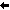

 Trainingsablauf | Inhaltsverzeichnis | Grundeinstellungen 
6.4 Lernstatistik
Nachdem die Lektion entweder durch Ablauf der Dauer bzw. der Lektion oder durch vorzeitiges Beenden und Speichern der Ergebnisse beendet wurde, wird Ihnen die Lernstatistik angezeigt. Sie können dieses Fenster auch direkt vom Startfenster des Schreibtrainers aufrufen, indem Sie in der Menüleiste auf den Eintrag Gehe zu und anschließend auf den Unterpunkt Lernstatistik klicken.
Die Ergebnisse werden in sechs Registern ("Tabs") dargestellt:
6.4.1 Bericht
Nach einem Schreibtraining zeigt das erste Register einen Auswertungsbericht der zuletzt absolvierten Lektion. Dieses Register wird nicht angeboten, wenn die Auswertung direkt über das Startfenster des Schreibtrainers aufgerufen wurde.
Der Bericht zeigt übersichtlich die erreichten Leistungsdaten der absolvierten Lektion, wie Bewertung, Anzahl der Fehler und Durchschnitt der Schreibgeschwindigkeit (genauere Informationen zu den einzelnen Leistungsdaten finden Sie im nächsten Kapitel). Neben den Leistungsdaten werden auch noch einmal alle getroffenen Einstellungen aufgelistet. Unterhalb der Leistungsdaten sehen Sie das zuletzt eingebene Diktat. Alle Tippfehler werden rot markiert und unterstrichen dargestellt.
Sollten Sie den Bericht ausdrucken wollen, können Sie rechts oben auf den Button Drucken klicken. Anschließend öffnet sich ein Eingabefenster. Geben Sie hier Ihren Namen ein, sofern Sie wollen, dass dieser auf dem Ausdruck erscheint. Sie können dieses Feld auch leer lassen. Ein weiterer Klick auf den Button Drucken öffnet dann den eigentlichen Druckdialog, um einen Drucker auszuwählen und den Druckvorgang zu starten.
Sie können Ihr Trainingsergebnis auch über Facebook veröffentlichen. Klicken Sie dazu rechts oben auf den Button Teilen auf Facebook.
6.4.2 Lektionenübersicht
Das Register Lektionenübersicht beinhaltet eine Liste aller absolvierten Lektionen. Nach einem Schreibtraining werden die Ergebnisse der zuletzt durchgeführten Lektion ganz oben dargestellt.
Zu jeder Lektion werden folgende Informationen angezeigt:
| Lektion: | Name der Lektion |
| Zeitpunkt: | Startzeitpunkt |
| Dauer: | Dauer in Minuten |
| Zeichen: | Anzahl der diktierten Zeichen |
| Fehler: | Anzahl der Tippfehler |
| Quote: | Fehlerquote in Prozent (Fehler / Zeichen) |
| A/min: | Anschläge pro Minute (Anschläge / Dauer) |
| Bewertung: | Bewertung in Punkten (((Anschläge - (20 * Fehler)) / Dauer) * 0.4) |
Die Spalte Bewertung errechnet aus Ihrer Schreibgeschwindigkeit und Ihrer Fehleranzahl einen Punktwert, an dem Sie Ihren Leistungsstand messen können. Anfänger erreichen zu Beginn meist nur geringe Punktwerte. Versuchen Sie jedoch, stetig im Laufe der Lektionen, bessere Werte zu erreichen!
Beachten Sie, dass langsames Tippen ohne Fehler bessere Werte hervorruft, als schnelles Tippen mit vielen Fehlern.
Eine Tabelle mit allgemeinen Erfahrungswerten der Bewertungs-Punktzahlen finden Sie im Kapitel 6.4.6.
Rechts oben über der Lektionenliste können Sie über eine Auswahl die angezeigten Lektionen zusätzlich filtern. Wenn Sie einen der Einträge Übungslektionen, Freie Lektionen oder Eigene Lektionen auswählen, werden nur die jeweils entsprechenden Lektionen aufgeführt.
Wenn Sie die Einträge in der Liste nach bestimmten Spalten sortieren möchten, klicken Sie einfach auf die jeweilige Spaltenüberschrift. Ein Pfeil zeigt Ihnen an, ob die Einträge der Spalte auf- oder absteigend sortiert wurden.
6.4.3 Lektionenverlauf
Der Lektionenverlauf zeigt Ihnen die Bewertungen der absolvierten Lektionen in Form eines Verlaufsdiagramms an. Die x-Achse (vertikal) zeigt dabei die jeweilige Bewertung, die y-Achse (horizontal) den Zeitpunkt des Trainings an.
Übungslektionen werden mit einem schwarzen Punkt dargestellt, die Ziffer über dem Punkt gibt die Nummer der Übungslektion an. Freie Lektionen werden mit einem blauen Punkt und eigene Lektionen mit einem grünen Punkt dargestellt.
Sie können das Verlaufsdiagramm zusätzlich über die Auswahllisten rechts oben sortieren und filtern. Außerdem können Sie den Mauszeiger auf einen Punkt im Verlaufsdiagramm bewegen, damit Ihnen in einem kleinen Fenster Detailinformationen zu der absolvierten Lektion angezeigt werden.
Das Verlaufsdiagramm wird erst angezeigt, wenn mindestens zwei Lektionen absolviert wurden.
6.4.4 Schriftzeichen
In der Tabelle Schriftzeichen werden alle Schriftzeichen ausgewertet, die im Laufe der Lektionen von Ihnen trainiert wurden. Die Schriftzeichen mit den höchsten Fehlerquoten, bereiten Ihnen am meisten Probleme.
Zu jedem Schriftzeichen werden folgende Informationen angezeigt:
| Soll-Fehler: | Anzahl der Soll-Fehler ("Zeichen sollte getippt werden, wurde es aber nicht") |
| Ist-Fehler: | Anzahl der Ist-Fehler ("Zeichen wurde fälschlicherweise getippt") |
| Vorkommen: | Anzahl, wie oft das Zeichen diktiert wurde |
| Fehlerquote: | Fehlerquote in Prozent (Soll-Fehler / Vorkommen) |
Wenn Sie die Einträge in der Liste nach bestimmten Spalten sortieren möchten, klicken Sie einfach auf die jeweilige Spaltenüberschrift. Ein Pfeil zeigt Ihnen an, ob die Einträge der Spalte auf- oder absteigend sortiert wurden.
6.4.5 Finger
Die Grafik Finger zeigt Ihnen die Fehlerquoten Ihrer Finger. Die Finger mit den höchsten Fehlerquoten bereiten Ihnen am meisten Probleme.
Wenn Sie die Maus über einen Finger bewegen, werden Ihnen zusätzlich die Häufigkeit und genaue Fehleranzahl des Fingers in einem kleinen Fenster angezeigt.
Die Fehlerquoten der Finger werden aus den Werten der Schriftzeichen und dem aktuellen Tastaturlayout berechnet.
6.4.6 Vergleichstabelle
Das Register Vergleichstabelle zeigt Ihnen eine Tabelle mit allgemeinen Erfahrungswerten der Bewertung. Diese Tabelle soll Ihnen lediglich einen Überblick geben und einen Vergleich zu Ihren Leistungen ermöglichen.
Trainingsablauf | Inhaltsverzeichnis | Grundeinstellungen 
© 2006-2011 Tom Thielicke IT Solutions